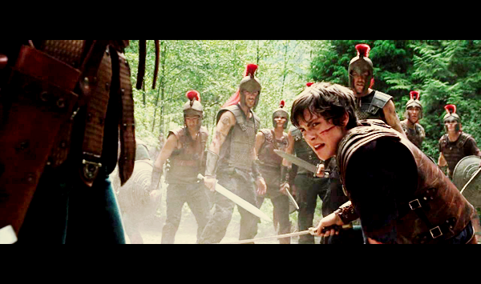
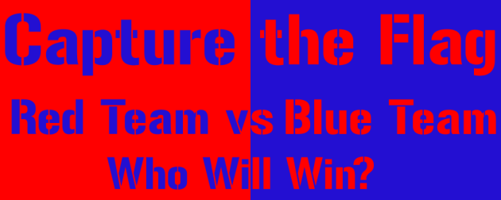

CTF - WTF
Introduction to Security CTF's (Capture the flag)
History of CTF
Percy Jackson and Annanbeth Chase
At Present
Summer Camps for fun and
Cyber Security

Coming to Security CTF
Types of CTF
- Jeopardy-style CTFs
- Attack-defence
Virtual Flag - Data
- flag{1this_is_a_flag!}
- flag{29529e062f1c02a07e43b0ca3c5f0f74}
Jeopardy Style
- Teams don't compete with each other directly
- Final Score
Challenges
- Binary Exploitation
- Reverse Engineering
- Crypto
- Steagno
- Recon
- Web
- Forensics
- Programming ppc
Attack Defence
- red vs blue
- every one is red and blue